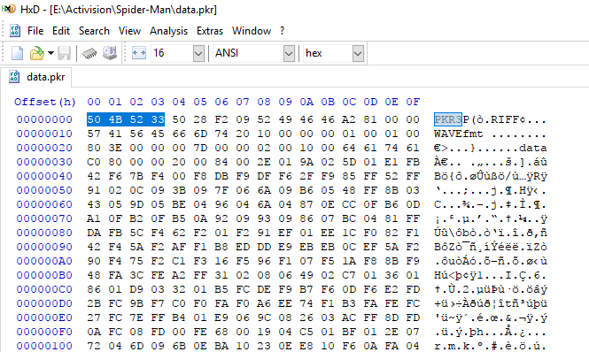
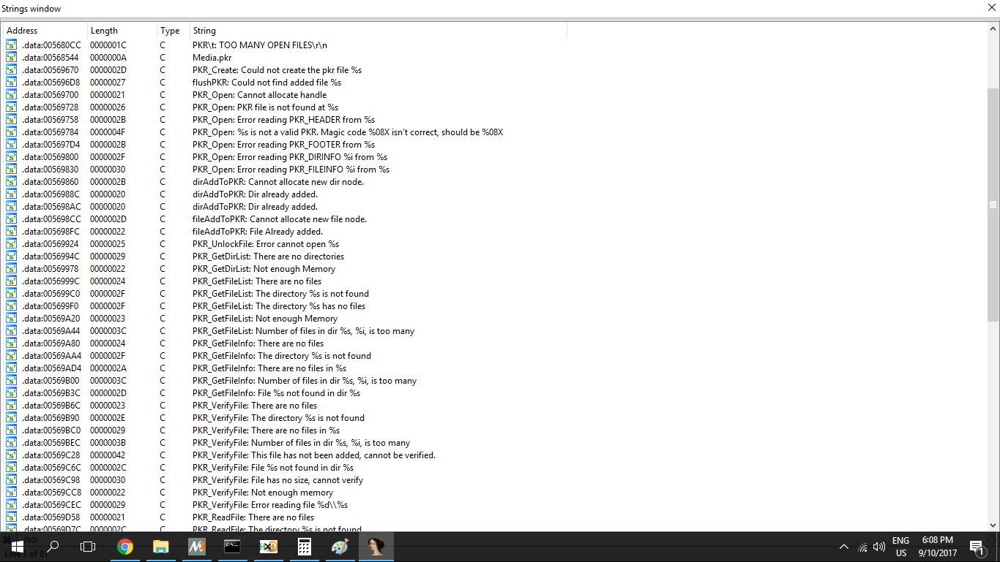
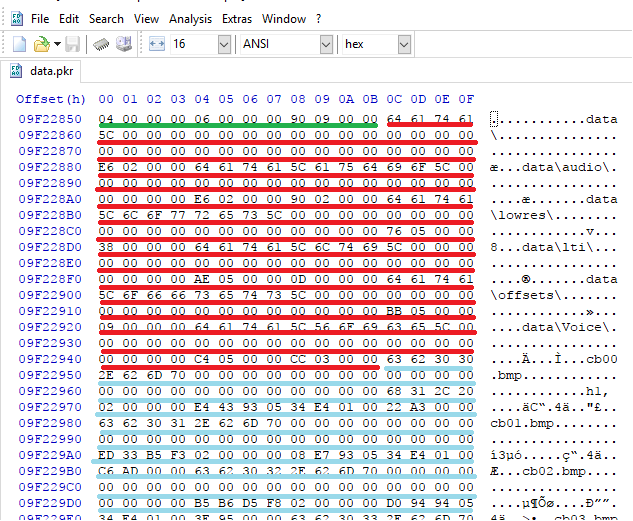

Reversing: Spiderman 2000 - PKR file format
What is it?
It's a container format used to store all the game's files. It was developed by Neversoft and is most known for its use on "Tony Hawk Pro Skater" game series. Since it contains all game files in order to modify anything we need to know what is going on.
Structure
typedef struct{
uint32_t magic;
uint32_t dirOffset;
}PKR3File;
The files start with a magic number PKR3 followed by an offset to the directory tree header.

As you can see after the offset there are the words RIFF and WAVE which are also magic numbers of WAV files. Due to the fact that spidey.exe contains a lot of file names this mislead me. Initally I thought this files had no structure and were just a bunch of files merged together. Thankfully there are a lot of references in the code to the functions responsible to handle PKR files.

Dir structure
The header
typedef struct{
uint32_t unk;
uint32_t numDirs;
uint32_t numFiles;
}PKRDirHeader;
Quick note: You'll see a lot of variables/members called unk due to the fact that I have no ideia of what they do and their modification not having any sign of impact on the file interpretation and not existing any references to it in the cose.
It contains the number of directories and the total number of files that the PKR holds.
The body
typedef struct{
char name[0x20];
uint32_t unk;
uint32_t numFiles;
}PKRDir;
After the header there's an array of PKRDirs(its lenght is defined by numDirs). And right after this there's a PKRFile array with the lenght of the total number of files.
typedef struct{
union{
uint8_t total[0x34];
struct{
char name[0x20];
uint32_t crc;
uint32_t compressed;
uint32_t fileOffset;
uint32_t uncompressedSize;
uint32_t compressedSize;
};
};
}PKRFile;
As you can see the game files have integrity checks, in this case it's actually CRC.
compressed can either hold 2(0x00000002) or -2(0xFFFFFFFE) which mean compressed and uncompressed respectively.
fileOffset contains the offset to file in the PKR file counting from the start.
compressedSize holds the size of the compressed files.
uncompressedSize holds the size of the uncompressed files OR the size of a compressed file when decompressed.
Here's how all these structures look in the file:

Green is the PKRDirHeader, red the PKRDirs and blue the PKRFiles.
Compression method
The files are compressed using zlib. Finding it was a piece of cake, again there are a lot of references in the strings.
Implementing it was the hardest part, during this period I got so many crashes that I decided to simply go with uncompress(). I know it sucks because it wastes a lot of cpu power but hey, it works ¯\_(ツ)_/¯.
If you're interested in reading my implementation you can checkout my github.